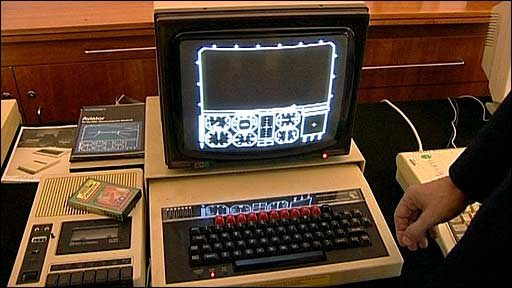
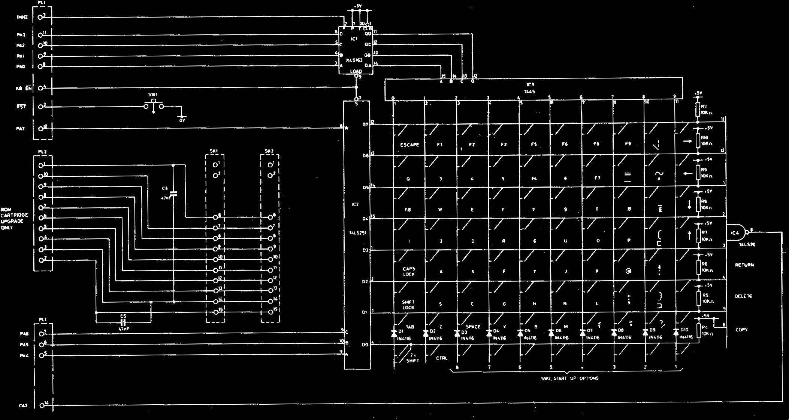

Emulating a BBC Micro
in Javascript
Trying to recapture a lost youth
Matt Godbolt
Hit Escape to see all slides, space for next
Arrow keys also work
What's a BBC Micro?
- BBC Computer Literacy Project
- 1981

Why me?

Why me?

What's in a BBC Micro?
- 2MHz 6502 CPU
- 32KB RAM / 32KB ROM
- Memory-mapped hardware:
- Video
- Sound
- Tape / floppy disc
- ADC / Econet / 2nd processor
- Video hardware
- "Teletext" character map
- Various bitmap modes up
- 640x256 in 2-colour
- 160x256 in 8-colour
What's inside?

What's in a 6502
- 5 8-bit registers:
- A - accumulator
- X - index register
- Y - index register
- P - flags register
- S - stack pointer
- 16-bit program counter
Instructions
LDA / STA / LDX etc ; load A / store A / load X / etc
TAX / TXA etc ; transfer A to X
PHA / PLA ; push A / pull A
CMP ; compare with A
ADC / SBC ; add/subtract with carry
CLC / SEC ; clear / set carry
JMP ; jump
BEQ / BNE / BCC / ; branch if equal / not equal / carry clear
BCS / BMI etc ; / carry set / minus etc
JSR / RTS ; jump to subroutine / return from subroutine
Addressing modes
a9 20 LDA #32 ; A = 32
a5 70 LDA $70 ; A = readmem(0x70)
ad 34 12 LDA $1234 ; A = readmem(0x1234)
bd 34 12 LDA $1234, X ; A = readmem(0x1234 + X)
b9 34 12 LDA $1234, Y ; A = readmem(0x1234 + Y)
b1 70 LDA ($70), Y ; t1 = readmem(0x70)
; t2 = readmem(0x71)
; A = readmem((t1 | (t2<<8)) + Y)
b5 70 LDA $70, X ; A = readmem(0x70 + X)
a1 70 LDA ($70, X) ; t1 = readmem(0x70 + X)
; t2 = readmem(0x71 + X)
; A = readmem(t1 | (t2<<8))
Example
.strlen ; 0x70/0x71 point to string.
; returns length in A (low) and X (high)
a0 00 LDY #0 ; we're going to use Y as the loop counter. Start at 0
a2 00 LDX #0 ; initialize the high part of the length
.lp
b1 70 LDA ($70), Y ; read the byte pointed to by (0x70/0x71) + Y
f0 09 BEQ end ; if it's zero, we're at the end of the string
c8 INY ; otherwise increment the loop counter
d0 f9 BNE lp ; if it didn't overflow past 0xff to 0, re-loop
e6 71 INC $71 ; else, increment the high part of the address
e8 INX ; and the X counter
d0 f4 BNE lp ; and re-loop (NB falling off here would mean > 65536)
.end
98 TYA ; put the loop counter into A (the low part of the length)
60 RTS ; and return
Emulating the 6502
var a = 0, x = 0, y = 0, s = 0, p = {c:false, z:false /* ... */};
function readbyte(addr) { /* ... */ }
var pc = readbyte(0xfffc) | (readbyte(0xfffd) << 8);
while (true) {
var opcode = readbyte(pc); pc++;
switch (opcode) {
case 0xa9: /*LDA #xx*/ a = readbyte(pc); pc++; break;
case 0xa2: /*LDX #xx*/ x = readbyte(pc); pc++; break;
case 0xa0: /*LDY #xx*/ y = readbyte(pc); pc++; break;
case 0x98: /*TYA*/ a = y; break;
case 0x69: /*ADC #xx*/ a += readbyte(pc); pc++; break;
case 0xb1: /*LDA (xx),Y*/
zp = readbyte(pc); pc++;
addr = readbyte(zp) | (readbyte(zp+1)>>8);
a = readbyte(addr + y);
break;
case 0xe8: /*INX*/ x = x + 1; break;
// and so on...
Except...
- Setting flags
- Memory access
- Hardware
- Interrupts
- Handling time
Flags
| 7 | 6 | 5 | 4 | 3 | 2 | 1 | 0 |
|---|---|---|---|---|---|---|---|
| Negative | oVerflow | - | - | Decimal | Interrupt disable |
Zero | Carry |
- Z & N set on ALU/load instruction
- C set by shifts & arithmetic
- V set by arithmetic
- D, V, C and I controlled by special instructions
So now we have:
case 0x69: /*ADC #xx*/
a += readbyte(pc); pc++;
if (p.c) a++; // previous carry
p.c = a > 0xff; // new carry
a &= 0xff;
p.z = !!a;
p.n = !!(a & 0x80);
break;
case 0xb1: /*LDA (xx),Y*/
zp = readbyte(pc); pc++;
addr = readbyte(zp) | (readbyte(zp+1)>>8);
a = readbyte(addr + y);
p.z = !!a;
p.n = !!(a & 0x80);
break;
Memory
| 0x10000 | |
|---|---|
| ↑ 0xff00 |
256 bytes OS ROM |
| ↑ 0xfe00 |
256 bytes hardware |
| ↑ 0xfd00 |
256 bytes ROM |
| ↑ 0xfc00 |
256 bytes hardware |
| ↑ ↑ 0xc000 |
15.5KB OS ROM |
| ↑ ↑ 0x8000 |
16KB Paged ROM |
| ↑ ↑ 0x4000 |
16KB RAM |
| ↑ ↑ 0x0000 |
16KB RAM |
var ram = new Uint8Array(0x8000);
var os = load("OS");
var romsel = 0;
var roms = [];
roms[15] = load("BASIC");
function readmem(addr) {
if (addr < 0x8000) return ram[addr];
if (addr < 0xc000) return roms[romsel][addr - 0x8000];
if ((addr >= 0xfe00 && addr < 0xff00)
|| (addr >= 0xfc00 && addr < 0xfd00)) return readhw(addr);
return os[addr - 0xc000];
}
function writemem(addr, b) {
if (addr < 0x8000) ram[addr] = b;
if (addr >= 0xfe00 && addr < 0xff00) writehw(addr, b);
// else does nothing - it's ROM
}
Hardware
- Keyboard
- I/O & Timers
- Video circuitry
Keyboard
Scanning
function updateKeys() {
if (freescanning) {
for (i = 0; i < 10; ++i) {
for (j = 1; j < 8; ++j) if (keys[i][j]) setca2();
}
} else {
for (j = 1; j < 8; ++j) if (keys[curCol[j]) setca2();
}
}
I/O & Timers

6522 Versatile Interface Adapter
- Interface with peripherals at 1MHz
- Source of interrupts
- BBC has two VIAs:
- $fe40-$fe4f System: keyboard, sound, LEDs, system timers
- $fe60-$fe6f User: printer, user, mouse, user timers
- Each VIA has two timers
- Timers can count down, latch, cause IRQ
- Shift registers for serial
One timer
function tickTimer1() {
count--;
if (count == -3 && !suppressed) {
// Timer fired!
timerFlags |= T1HIT; // mark we hit in timer flags
// Send an IRQ if needed
if (irqEnabled & timerFlags)
cpu.interrupt();
// If we're in one-shot mode, prevent further IRQs
if (!(configFlags & 0x40)) suppressed = true;
}
// Reload timer value
if (count == 3) count += latch + 4;
}
Video interface
- Pixel generator shares RAM with CPU
- Video has 12 registers
- Screen mem addr
- Number of colours
- Resolution, etc
- $fe00 - register select
- $fe01 - register value
Interrupts & Timing
- 2MHz clock
- So emulate 2,000,000 cycles per second
- Intructions take different times:
LDA #42 ; 2 cycles LDA &70 ; 3 cycles LDA &1234 ; 4 cycles LDA (&70), Y ; 5-6 cycles INC &1234, X ; 7 cycles - Interrupts checked at instruction end
Our code now looks like
function runCpu(clocks) {
while (clocks > 0) {
var opcode = readbyte(pc); pc++;
switch (opcode) {
case 0xb1: /*LDA (xx),Y*/
zp = readbyte(pc); pc++;
addr = readbyte(zp) | (readbyte(zp+1)>>8);
a = readbyte(addr + y);
p.z = !!a; p.n = !!(a & 0x80);
clocks -= 5;
break;
// ...and other opcodes...
}
if (irqFlag && p.i == false) {
pc = irqHandler; // ...and much more...
}
}
}
But!
- More complicated than that!
- Mid-instruction reads...
- Multiple reads and redundant writes
- IRQs actually checked on penultimate cycle
- 1MHz bus cycle-stretching
- ...probably too much to cover here
Real implementation
- Many similar opcodes
- Similar addressing modes
- Code generate from disassembly table:
var opcodes6502 = {
0x00: "BRK",
0x01: "ORA (,x)",
0x03: "SLO (,x)",
0x04: "NOP zp",
0x05: "ORA zp",
// skipping a few...
0xFD: "SBC abs,x",
0xFE: "INC abs,x",
0xFF: "ISB abs,x",
};
High-level code - 'op'
function getOp(op) {
switch (op) {
case "NOP": return { op: [] }
case "LDA": return { op: ["cpu.a = REG", "cpu.setzn(REG);"], read: true }
case "STA": return { op: ["REG = cpu.a"], write: true }
case "LDX": return { op: ["cpu.x = REG", "cpu.setzn(REG);"], read: true }
//...
case "INC": return {
op: ["REG = (REG + 1) & 0xff;", "cpu.setzn(REG);" ],
read: true, write: true
};
//...
}
}
High-level code - addressing mode
function gen(op, addrMode) {
var ig = InstructionGen();
var op = getOp(op);
switch (addrMode) {
case "abs":
ig.tick(3);
ig.append("var addr = cpu.getw();");
if (op.read) {
ig.readOp("addr", "REG");
if (op.write) ig.writeOp("addr", "REG"); // spurious write
}
ig.append(op.op);
if (op.write ig.writeOp("addr", "REG");
return ig.render();
//...
}
}
InstructionGen
- Knows about weird memory rules
- Schedules "ticks"
- Optimizes
- Renders as Javascript source
INC abs
var REG = 0|0;
var addr = cpu.getw();
cpu.polltimeAddr(4, addr);
REG = cpu.readmem(addr);
cpu.polltimeAddr(1, addr);
cpu.checkInt();
cpu.writemem(addr, REG);
REG = (REG + 1) & 0xff;
cpu.setzn(REG);
cpu.polltimeAddr(1, addr);
cpu.writemem(addr, REG);
Emulating the video
- Co-routine with processor
- Every clock cycle:
- reads one byte of RAM
- generate 8 TV pixels based on settings
- Generate IRQs at top of screen
Something like
scrx += 8;
var b = readbyte(addr++);
var offset = scry * 1280 + scrx;
for (var i = 0; i < 8; ++i) {
fb32[offset + i] = convertPixel(b, i);
}
if (scrx >= curEndPos) {
scrx = curStartPos;
scry ++;
if (scry >= numLines) {
scry = 0;
generateIrq();
}
}
Image processing
- Real BBC usually hooked to a TV
- Blur image on blit to canvas
- Interlace
Sound
- Same chip as in the Sega Master System
- Another coroutine
Live demo!
Misc stuff
Performance
switchproblems- Dynamic dispatch
- Loop unrolling for video
- Uint32Array for screen
More stuff
- Exact timing
- Undocumented opcodes
- People are more crazy than me...
Worth it!

Also finally hacked Lunar Jetman